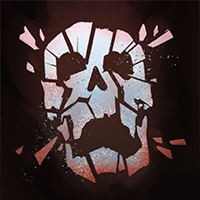
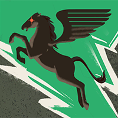
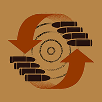
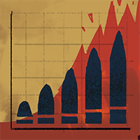
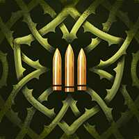
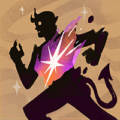
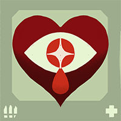
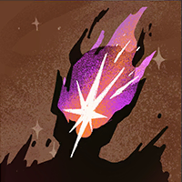

Helden › Assassine
Yamato
Yamato ist ein spielbarer Held in Deadlock. Nach dem Verrat in den eigenen Reihen floh die Erbin des Seventh-Moon-Syndikats nach Amerika — und nahm den Namen ihres Bruders an, der bei ihrer Flucht sein Leben gab: Yamato.
Hintergrund
In die Familie eines Verbrecherbosses geboren, war für Hanaori und ihren Bruder Yamato klar, dass sie nach dem Tod des Vaters das „Seventh Moon“-Syndikat übernehmen würden. Jahrelang führten sie die Organisation als Gleichberechtigte zu Profit und Erfolg — bis zur geplanten Expansion nach Amerika.
Der Plan war einfach: Yamato sollte in Amerika die internationale Präsenz aufbauen, Hanaori derweil die Heimat führen. Doch nicht alle Untergebenen wollten eine Frau an der Spitze sehen. Der Aufstand kam schnell und gewaltsam — Yamato gab sein Leben, um seine Schwester zu schützen, und dank seines Opfers gelang Hanaori mit wenigen Getreuen die Flucht nach Amerika.
Dort empfing sie der Mann, der eigentlich ihren Bruder hätte treffen sollen. Mit japanischen Namen nicht vertraut, hielt er sie für ihn und nannte sie „Yamato“. Hanaori wollte den Irrtum erst richtigstellen — und ließ es dann. Den Namen ihres Bruders zu tragen und seinen Traum weiterzuführen, schien ihr der beste Weg, sein Andenken zu bewahren.
Spielstil
Yamato dezimiert ihre Rivalen mit präzisen, aufgeladenen Hieben. Doch ihre stärksten Angriffe lassen sie verwundbar zurück — jede Attacke muss sitzen. Ihre Schattenverwandlung setzt am Ende alles zurück und macht sie kurzzeitig nahezu unaufhaltsam.
Fähigkeiten
Power Slash
Taste 1Kanalisierter Schwertstreich, dessen Schaden über 1,4 Sekunden anwächst — volle Ladung, voller Schaden.
Abklingzeit: 12 s
Flying Slash
Taste 2Enterhaken-Wurf, der Yamato zum Gegner zieht, Nahkampfschaden verursacht und das Ziel verlangsamt.
Abklingzeit: 36 s
Crimson Slash
Taste 3Weiter Hieb, der Gegner schädigt und ihre Feuerrate senkt — trifft er Helden, heilt sich Yamato.
Abklingzeit: 16 s
Shadow Transformation
Taste 4 UltimateVerschmilzt mit der Schattenseele: Nach unverwundbarer Verwandlung sind alle Fähigkeiten zurückgesetzt und deutlich schneller — dazu Immunität gegen Debuffs und massive Resistenzen.
Abklingzeit: 150 s
Basiswerte
| Wert | Basis (Stufe 1) | Kategorie |
|---|---|---|
| Maximale Gesundheit | 730 | Vitalität |
| Gesundheitsregeneration | 1 / s | Vitalität |
| Lauftempo | 8,2 m/s | Bewegung |
| Sprint-Bonus | +1,6 m/s | Bewegung |
| Ausdauer | 3 | Bewegung |
| Leichter Nahkampfschaden | 55 | Waffe |
| Schwerer Nahkampfschaden | 128 | Waffe |
Beliebte Builds
Diese Daten stammen direkt aus dem Build-Browser im Spiel: die drei meistfavorisierten Builds für Yamato, sortiert nach der Zahl der Spieler, die sie gespeichert haben. Klick einen Build an, um die Item-Reihenfolge zu sehen.
№1 ADC Yamato (Updated 9/26) 227.876 Favoriten
„Build focusing on split pushing with bullet damage items. Try not to group with your team and provide pressure in side lanes. Farm neutral camps as much as you can to get ahead. After GC, ensure both side lanes are pushi…“












№2 Ttv/innn8 1 shot Spirit Updated 10/04 50.604 Favoriten
„Skill unlock 1-3-2-4. Skill level up 3 1 1 1 4 2 2 4 3 x x x x x. If solo lane put 1st point into 3. Play passive in duo lanes, aggressive in solo lanes. Start jungling / split pushing once you have 1 maxed. Once you …“








№3 RONALD (TTV FREDTHEFINCH) 38.103 Favoriten
„any questions ask in twitch or in discord (linked on twitch)“




Warum sind das die besten Builds?
Die drei Builds wurden zusammen über 316.583-mal von Spielern gespeichert — Favoriten sind das stärkste Qualitätssignal im Build-Browser, denn ein Build, den so viele Spieler über Monate und Patches hinweg behalten, hat sich in echten Matches bewährt. Die Builds mischen alle drei Kategorien — ein Zeichen dafür, dass Yamato flexibel gespielt wird und je nach Matchup Waffe, Überleben oder Fähigkeiten priorisiert. Als Einstieg gilt: Folge der Item-Reihenfolge des №1-Builds Kategorie für Kategorie und passe erst mit wachsender Erfahrung an dein Matchup an.
Trivia
- Yamatos interner Klassenname in den Spieldaten lautet
hero_yamato. - Die Spieldaten führen den Helden mit den Tags Relentless, Acrobatics, Pursuer.
- Die Einstiegskomplexität liegt bei 3 von 3 — Kategorie „Experte“.